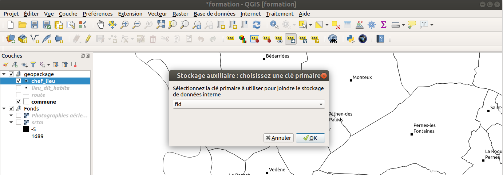

La gestion des étiquettes
Rappel des fonctionnalités
Documentation : https://docs.qgis.org/3.10/fr/docs/user_manual/working_with_vector/vector_properties.html#labels-properties
QGIS 3 présente une interface unifiée qui liste toutes les options accessibles dans une seule fenêtre dans l'onglet
Étiquettes des propriétés de la couche vecteur :
- un aperçu du rendu de l’étiquette
-
une liste de sous-onglets pour configurer finement les options
-
Nous allons faire un étiquetage simple sur la couche
communes:- Se rendre dans l'onglet
Étiquettesdans les propriétés de la couche vecteur :
- Se rendre dans l'onglet
-
Choisir :
Étiquettes simplesÉtiquetter avecle nom du champ que l'on souhaite afficher.
-
Choisir une taille de police adaptée
- Ajouter une petite zone tampon (un liséré blanc)
- Définir des seuils de visibilités dans l'onglet
Rendu.
Le moteur d’étiquetage de QGIS est riche en fonctionnalités. L’interface regroupe les différentes options par thèmes:
- Texte : Police, Taille, casse, etc.
- Formatage : Retour à la ligne, alignement, formatage des nombres décimaux
- Tampon : taille, couleur, transparence
- Arrière-plan : Ajout de n’importe quel fond derrère l’étiquette (forme, SVG, etc.) + paramétrage fin
- Ombre : Définition d’un ombrage (position, décalage, transparence, etc.)
- Connecteurs : permet de générer une flèche entre le point géographique et l'étiquette quand ils sont éloignés
- Position : en fonction du type (polygone, lignes, points), Position et rotation via des colonnes, priorité
- Rendu : seuils d’échelle, paramètres avancés

Certaines options sont spécifiques pour une géométrie.
Chaque paramètre de la configuration peut soit:
- être choisi de manière classique parmi les choix proposés
- être dynamique via le choix d’un attribut ou d’une expression
Quand un icône est jaune, cela veut dire que le contôle par les données est actif. Le paramètre dans l'interface graphique peut ne pas être pris en compte car il est peut-être surchargé au niveau de l'entité. Il est possible de désactiver en faisant un clic-droit sur une propriété en jaune.

Le déplacement manuel des étiquettes
QGIS 3 permet maintenant de déplacer les étiquettes manuellement sans avoir besoin de créer de couches spécifiques, ou d'utiliser le plugin Easy Custom Labelling
Notes
- Un déplacement manuel d'étiquette n'est valable que pour une échelle fixe !
- Compacter d'abord les étiquettes:
wordwrap("NOM", 13, '-') - Il faut absolument une clé primaire de type entier comme identifiant unique
Étapes
- Pour gérer le déplacement, il faut utiliser la barre d'outils Étiquettes
- Choisir l'échelle
- Cocher Mettre en surbrillance les Étiquettes et les Diagrammes épinglés
- Cocher l'outil Déplacer les Etiquettes et les Diagrammes
- Au 1er clic sur la carte, une fenêtre demande de choisir l'identifiant unique de la couche

Vous pouvez ensuite utiliser cet outil Déplacer les étiquettes et les diagrammes en cliquant sur l'étiquette et en la faisant glisser à l'endroit désiré. Les étiquettes déplacées apparaissent avec un fond bleu
D'autres outils permettent de tracer un rectangle autour des entités choisies et
- épingler/désépingler les étiquettes: on les réinitialise,
- masquer/afficher les étiquettes: icône oeil
On peut aussi manuellement pivoter chaque étiquette, ou modifier toutes les propriétés d'une étiquette.
Les données sont enregistrées dans l'archive du projet QGZ, pour chaque couche. On peut voir les paramètres dans les propriétés de la couche, onglet Stockage auxiliaire.
Utilisation d'une expression pour construire l'étiquette
Par défaut, nous avons utilisé un champ de notre attributaire pour construire notre étiquette.
Nous souhaiterions désormais vouloir étiquetter en utilisant deux champs : le nom de la commune ET son code INSEE. Il faut désormais utiliser le petit epsilon violet, qui comme vu dans la présentation de l'interface fait référence à la notion des expressions.
-
Pour afficher le nom de la commune avec le code INSEE
- Attention aux différents opérateurs
+,||etconcat()qui permettent tous de concaténer des chaînes, mais attention aux valeurs NULL et aux valeurs mathématiques. On recommandeconcatbien qu'elle soit un peu plus complexe. - Solution
concat("NOM", '\n', "CODE_INSEE")
- Attention aux différents opérateurs
-
afficher une information calculée à la volée, comme la superficie de la commune en km² :
- La superficie en anglais se dit
area. - La projection de la couche est actuellement en m, donc la surface est en m².
- Solution partielle
$area / 1000000 - Solution finale
concat("NOM", '\n', round($area / 1000000, 2), ' km²')
- La superficie en anglais se dit
-
changer pour afficher la densité de population
- Solution
concat("NOM", '\n', round("POPULATION" / ($area / 1000000, 2)), ' hab/km²')
- Solution